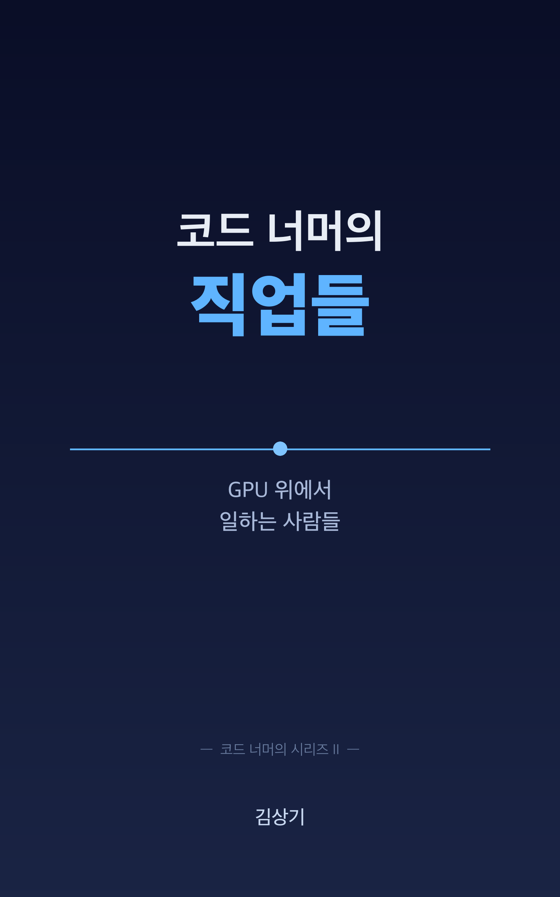

코드 너머의
직업들
GPU 위에서 일하는 사람들
"반도체는 먼저 갔고, 사람은 따라간다. 그리고 사람의 자리는 새로 만들어진다."
책 전체를 한 줄로(에필로그)

SNS 글 한 편에 달린 답글이 한 질문으로 모였다
그렇다면 다음 단계의 주인공이 될 회사는 어디이고,
그 회사에서 일하는 사람들은 누구인가.
책을 펴내며
2025년 봄에 쓴 글 「반도체는 먼저 갔고, 소프트웨어는 따라올까요」의 관찰은 하나였습니다. PC와 인터넷과 모바일이 세 번 반복한 시대 전환 패턴 위에 AI 사이클이 올라가 있고, 지금은 끝의 풍경이 아니라 다음을 기다리는 풍경에 가깝다는 것.
AI 인프라 다음에 자라는 다섯 자리
| 직업 | 한국 도착 | 가장 가까운 현직 |
|---|---|---|
| 7장 AI Product Manager | 도구화 단계 ★★★ | PM·기획자 |
| 8장 Forward Deployed Engineer | 재편 중 ★★★★ | SI 컨설턴트, 솔루션 아키텍트 |
| 9장 Applied AI Engineer | 성숙 ★★★★★ | 백엔드, 풀스택 |
| 10장 Agent 운영자 / AgentOps | 운영팀 형태 ★★ | SRE, 플랫폼, 시니어 백엔드 |
| 11장 Eval Engineer | 가장 늦음 ★ | QA, 플랫폼, 데이터 엔지니어 |
11장 끝의 정리 표에서. 다섯 자리 모두 Jagged Frontier 매핑이라는 공통 능력 위에 서 있고, KPI가 결과 단위로 옮겨가는 시대의 짝을 이루는 자리들이다.
네 부분이 시대 → 작동 원리 → 직업 → 전환 순서로 쌓인다
선택 독서: 직업 도감만 빠르게 보려면 7~11장과 13장의 매핑 표, 전환 행동만 필요하면 14장, 시대 분석만 필요하면 1·2·3장과 막간, 한국 시장만 보려면 12장과 각 직업의 한국 채용 신호 칸.
이름조차 명확하지 않던 자리들이 채용 공고에 늘고 있다
2010년에도 Qualcomm과 ARM이 끌고 소프트웨어는 보이지 않았고 "모바일은 끝났다"는 말이 있었다. 5년 뒤 2015년, Uber·Airbnb·Instagram·WhatsApp이 시장의 주인공이 되어 있었다.
인프라가 먼저 가고, 사람이 따라온다
PC도, 인터넷도, 모바일도 같은 순서를 따랐다. 매번 반도체가 먼저 갔고, 시차를 두고 그 위에서 위대한 소프트웨어 회사들이 등장했다. 그리고 매번 주인공은 새로 등장한 회사였다.
- 1장. 반도체는 늘 먼저 갔다
- 2장. 시차는 점점 짧아진다
- 3장. 우리는 지금 어디쯤 와 있나
세 번의 시대, 매번 짧아진 시차
| 시대 | 인프라 깔린 시점 | 시장 지배자 등극 | 시차 |
|---|---|---|---|
| PC | 1981 (IBM PC + Intel 8088) | 1993 (MS > IBM) ~ 1995 (Windows 95) | 12~14년 |
| Internet | 1995~96 (Cisco/Sun 폭증) | 2004 (Google IPO) ~ 2006 (AWS S3) | 9~11년 |
| Mobile | 2007~08 (iPhone, App Store) | 2012~13 (보급률 50%, FB 모바일 광고 50%) | 5~6년 |
PC 시대를 연 IBM은 인터넷 시대의 주인공이 되지 못했고, 인터넷 시대 초기 강자였던 Yahoo는 모바일 시대로 매끄럽게 넘어가지 못했다.
인프라 → 가능성의 발견 → 비즈니스 모델
Carlota Perez: Installation 후반, Frenzy 단계
"It is during the Deployment Period — after the major financial collapse — that the full social and economic potential of the new technologies can be realized."
Carlota Perez, Technological Revolutions and Financial Capital (2002)
Perez의 모형에서 모든 기술 혁명은 Installation(약 20년)과 Deployment(약 30년)를 거칩니다. Perez는 인터뷰에서 AI가 Installation 후반, Frenzy 단계에 있다고 답했습니다. Cisco가 2000년 정점에서 90%를 잃는 동안 Google이 자라고 Amazon이 AWS를 출범했습니다. 인프라가 무너지는 동안 응용이 자라는 풍경이었습니다.
AI는 네 가지 모두에서 가장 앞에서 출발했다
단서도 있다. 각국 규제(EU AI Act·미국 행정명령·한국 AI 기본법), 다중 에이전트 실패율 41~86.7%(Cemri 외 2025)라는 신뢰성 문제, 지역별 대기업 도입 속도 차이.
신입이 가장 빠르게 큰다: Brynjolfsson·Li·Raymond (NBER, 2023)
도구가 고숙련자의 best practice를 추출해 신입에게 전달하는 방식으로 작동했다. 6개월이 채 안 된 신입이 도구를 쓰면 1년 차 숙련자와 비슷한 결과를 냈다.
인프라는 신고가, 소프트웨어는 가격을 받지 못한다
2024년 12월 12일 Satya Nadella가 BG2 팟캐스트에서 "SaaS is dead"라고 말했고, Benchmark의 Sarah Tavel은 엔터프라이즈 판매에는 여전히 사람이 필요하다고 반론했다. 어떤 형태의 SaaS가 끝나고, 어떤 형태의 소프트웨어가 자라기 시작했다는 뜻에 가깝다.
AI 위에서 일이 돌아가는 방식
길이가 길어지고, 속도가 빨라지고, 비용이 떨어졌다. 그 위에서 에이전트가 도구에서 동료에 가까운 자리로 올라왔고, 시트당 과금이 결과물 과금으로 옮겨가고 있다.
- 4장. GPU와 데이터센터가 가능하게 한 것들
- 5장. 에이전트가 일을 한다는 것
- 6장. 새로운 비즈니스 모델
길이 · 속도 · 비용, 그리고 그 뒤의 자본
GPT-4 출시 때(2023년 3월) 입력 $30·출력 $60 / 1M 토큰. 지금 GPT-4 수준 성능의 가격은 1M 토큰당 1달러 미만이다.
모바일이 GPS·결제·푸시를 한꺼번에 줬듯, AI는 세 가지를 한꺼번에 줬다
| 무엇이 가능해졌나 | 새 일감 | 직업 |
|---|---|---|
| 길이 (1M 토큰) | 어떤 청크를 가져올지, 1M 토큰을 어떻게 채울지, 긴 컨텍스트에서 모델이 어디까지 집중하는지 | Applied AI Engineer |
| 속도 (실시간 대화) | 고객 현장에서 실시간 응답 시스템 튜닝, 1초 안에 응답해야 하는 음성 에이전트 배포 | Forward Deployed Engineer |
| 비용 (평가·루프 감당) | 평가 자동화, LLM-as-judge 설계와 편향 잡기 | Eval Engineer |
| 세 지표 함께 | 길게·빠르게·싸게 도는 에이전트의 행동 추적, 실패 모드 카탈로그화 | Agent 운영자 |
4장 '모바일과 같은 그림'에서. 직업의 일감이 AI 인프라의 어느 변화에서 나왔는지를 한 줄로 매핑할 수 있다는 것이 이 시대의 특징이다.
도구 · 어시스턴트 · 에이전트
2026년 지금 대부분의 프로덕션 시스템은 자율성 5단계 가운데 3단계(도구 사용) 어디쯤에 있다. Anthropic과 Rakuten의 사례에서는 에이전트가 7시간 동안 자율적으로 작업해 1,250만 줄 규모 코드베이스의 엔지니어링 작업을 끝냈다.
다중 에이전트는 측정해 보면 대부분 망가져 있다: Cemri 외 (UC Berkeley, 2025)
단일 에이전트 베이스라인 대비 성능 향상이 최소이거나 오히려 마이너스인 경우가 흔했다. 동료에 가까울수록 그 옆에 운영하는 사람이 필요하다. 행동 설계, 성공 기준 정의, 실패 모드 추적, 사후 검증을 맡을 사람이다.
사용량이 아니라 성공한 일에 가격을 매긴다
| 회사 | 과금 단위 | 원고의 숫자 |
|---|---|---|
| Fin(Intercom) | 문제를 끝까지 해결하거나 사람에게 핸드오프된 대화 1건 | 1건당 99센트. "You only pay when Fin delivers value." |
| Zendesk Resolution Platform | 자동 해결 1건(사람에게 에스컬레이션되면 과금 없음) | 1~100건 $1.50 → 5,001건+ $1.00, 약정 없음 $2.00 (2024년 8월) |
| Sierra | 대화 해결 · 해지 만회 · 업셀 완료 중 하나가 일어날 때 | 2024년 2월 출시 → 2025년 11월 ARR $100M → 2026년 5월 평가가치 $15.8B |
Bessemer(200개 이상 AI 벤더): 하이브리드 가격 모델 27% → 41%, 순수 시트 21% → 15%. 시트를 고수하는 회사는 gross margin이 40% 낮고 churn이 2.3배 높았다.
Klarna: 700명분의 일감, 그리고 다시 사람
"We focused too much on efficiency and cost. The result was lower quality."
Sebastian Siemiatkowski, Klarna CEO (Customer Experience Dive 인용)
2024년 2월 도입 첫 1개월에 230만 건의 대화, 전체 고객 응대의 약 2/3, 풀타임 직원 700명분, 평균 해결 시간 11분 → 2분 미만. 그런데 2025년 후반 Klarna는 사람 고객 응대 인력을 다시 채용하기 시작했습니다. "700명 대체"는 정확히는 성장기에 추가로 채용하지 않은 일감 규모에 가까웠습니다. 이 책은 이것을 결과를 책임지는 일에서 사람이 빠질 수 없는 영역이 드러난 사건으로 읽습니다.
비즈니스 모델이 바뀌면 다섯 직업이 책임지는 숫자가 바뀐다
| 직업 | 전에는 | 이제는 |
|---|---|---|
| AI Product Manager | 기능 출시 수 | 결과물 단가 절감 · Resolution Rate · 해지 만회 건수 |
| Forward Deployed Engineer | 프로젝트 마감일 | 현장 도입 후 결과 도달까지의 시간 |
| Applied AI Engineer | 응답 시간 · 가용성 | 토큰당 비용 · 결과당 비용 |
| Agent 운영자 | 시스템 가동률 | 에이전트 행동의 분포 |
| Eval Engineer | 통과/실패율 | 측정 가능성 자체 |
새 직업의 해부
책의 무게중심. 다섯 자리를 같은 다섯 칸(하루의 풍경 / 무엇이 다른가 / 어떤 사람이 잘 맞나 / 한국 채용 신호 / 90일 행동)으로 나란히 본다.
- 7장. AI Product Manager
- 8장. Forward Deployed Engineer
- 9장. Applied AI Engineer
- 10장. Agent 운영자 / AgentOps
- 11장. Eval Engineer
- 막간. 우리가 틀릴 수 있는 9가지
Jagged Frontier: 경계를 그리는 능력 (Dell'Acqua 외, HBS 2023)
BCG 컨설턴트 758명(전체 IC급의 약 7%) 사전등록 RCT, 같은 GPT-4. 다섯 직업이 공통으로 요구하는 메타 능력은 AI가 무엇을 잘하고 무엇을 못하는지 경계를 빨리 그리는 것이다.
챕터마다 한국 칸의 깊이가 다른 이유
| 직업 | 한국 도착 단계 | 정확한 타이틀 | 자료 |
|---|---|---|---|
| 9장 Applied AI Engineer | 성숙: 거의 모든 빅컴퍼니·스타트업이 채용 중 | 다양한 타이틀로 활발 | ★★★★★ |
| 8장 Forward Deployed Engineer | 재편 중: SI 빅3가 AI 컨설턴트 + 솔루션 아키텍트로 분리·결합 | 'FDE' 거의 없음 | ★★★★ |
| 7장 AI Product Manager | 도구화 단계: PM 직무에 AI 활용이 통합 | 별도 직군화 1~2년 후 예상 | ★★★ |
| 10장 Agent 운영자 | 운영팀 형태 — SK 에이닷 등 사실상 수행 중 | 정식 타이틀 거의 없음 | ★★ |
| 11장 Eval Engineer | 가장 늦음: 업스테이지 부분 사례 | 영문 표기로만 | ★ |
자료가 부족한 챕터는 왜 부족한지를, 풍부한 챕터는 왜 풍부한지를 함께 짚었다.
모델을 제품으로 만드는 사람: 전통 PM과의 경계선
| 항목 | 전통 PM | AI PM |
|---|---|---|
| 기능 명세 | PRD | Evals |
| 사이클 | 분기 로드맵 | 연속 실험 |
| 시스템 동작 | 결정론적 | 확률적 |
| 메트릭 | DAU·전환율·NPS | + hallucination rate, factuality, refusal rate |
| 일상의 산출물 | 와이어프레임, 사양서 | eval 데이터셋, 시스템 프롬프트 PR |
"Evals replace traditional PRDs for AI products." (Hamel Husain) 가상 인물 수진의 PRD는 기능 설명이 짧고, 그 아래에 evals 셋이 길게 붙는다("오늘 만든 예약 보여줘" → 오늘 만든 예약만, 성공률 ≥95%).
별도 직군인가, PM의 새 표준인가
"AI가 아니라, AI를 잘 쓰는 PM에 의해 PM이 대체됩니다."
잡코리아 PMPO Day 행사에서 나온 발언
한국에서는 PM 공고에 "AI 활용 기획 포함"이 붙는 형태가 가장 흔합니다(토스·당근·카카오·네이버·라인). 업스테이지·솔트룩스·뤼튼 같은 AI 네이티브 회사의 PM 직무는 미국 AI PM과 거의 같은 형태입니다. 저자는 별도 직군 타이틀이 본격 등장하는 시점을 2027~2028년으로 보는데, 검증이 필요한 가설입니다. 면접에서 자주 나오는 질문은 "최근에 만든 evals 셋을 보여 주세요"입니다.
고객 현장에서 모델을 다듬는 사람: SI·SA와의 경계선
| 항목 | SI 컨설턴트·SA | Forward Deployed Engineer |
|---|---|---|
| 산출물 | 슬라이드, 제안서, 설계 문서 | production code, evals, 시스템 프롬프트 |
| 프로젝트 길이 | 단발 프로젝트, 종료 후 떠남 | 지속 운영, 6~12개월 임베드 흔함 |
| 데이터 처리 | 종종 회사로 데이터를 가져옴 | 고객사 안에서 처리 |
| 결과 책임 | 납기·문서 기준 | 고객의 KPI 변화가 일의 끝 |
| 영업 책임 | 시니어급은 매출 책임 가짐 | 매출 책임 없음(Bloomberry 1,000건 분석에서 0%) |
기원은 2011년 Palantir가 솔루션·통합 엔지니어에게 준 새 타이틀, 'Deltas'. 가장 짧은 점프는 한국 SI 컨설턴트·솔루션 아키텍트이고, 빠진 한 가지는 코드를 직접 쓰는 습관이다.
Bloomberry, 1,000건 이상의 FDE 채용 공고 분석
연봉: 미국 일반 시장 FDE 중앙값 $173,816(Levels.fyi), OpenAI/Anthropic mid-senior $350K~$550K, 한국 SI 빅3 시니어 컨설턴트·SA 8,000만 원~1억 2,000만 원. 휴리스틱: FDE 공고에 quota·pipeline·revenue responsibility가 있으면 Sales Engineer에 가깝다.
백엔드·풀스택 개발자의 자연스러운 다음 자리
| 항목 | 전통 백엔드 | Applied AI Engineer | ML Engineer |
|---|---|---|---|
| 시스템 동작 | 결정적 | 비결정적 | 학습은 결정적, 응답은 비결정적 |
| 일상의 산출물 | API, DB 스키마 | RAG 파이프라인, system prompt, function call 정의, evals | 학습 파이프라인, 모델 가중치 |
| 검증 방법 | 단위·통합 테스트 | Evals (LLM-as-judge 포함) | 벤치마크, holdout set |
| 최적화 축 | 응답 시간, 가용성 | 응답 시간·토큰 비용·결과 정확도 3축 | 모델 정확도·학습 속도 |
| ML 박사 필요도 | 없음 | 거의 없음 | 흔함 |
"Data Scientists answer questions. ML Engineers build systems. AI Engineers ship products." (Drew Breunig) "ML engineers focus on the model. Applied AI engineers focus on the system around the model." (Hamel Husain)
거의 모든 한국 공고에 RAG + LangChain + LLMOps + 평가
"거의 모든 공고가 RAG와 LangChain 경험을 요구합니다. LLMOps 운영 능력이 중요합니다." (jmhong2020, Threads의 한국 AI 채용 트렌드 정리) 가상 인물 지수의 하루: 청크 수 5개 → 12개로 늘어 토큰 비용 30% 증가를 트레이스에서 찾는다.
이 책의 시그니처 직군: 관측 대상이 상태에서 행동으로
| 항목 | SRE / DevOps | AgentOps |
|---|---|---|
| 관측 대상 | 시스템의 상태 (CPU, 메모리, 응답 시간) | 에이전트의 행동 (의사결정 트리, 도구 호출 패턴) |
| 알람의 트리거 | p99 응답 시간, 에러율 | 행동의 분포 이탈, 실패 모드 발생 |
| Postmortem 주제 | 서비스 죽음, DB 장애 | 에이전트의 잘못된 결정 |
| 측정 도구 | Prometheus, Datadog, Grafana | LangSmith, Langfuse, Helicone, Arize Phoenix, Braintrust |
| 표준어 | SLI / SLO / SLA | eval 점수, refusal rate, hallucination rate |
2024년 11월 arXiv(2411.05285)에 학술 용어로 등장, 2025년 초 IBM이 정의 공개. IBM 추정 시장 규모 2024년 약 50억 달러 → 2030년 약 500억 달러. 직군화 가설: SRE 약 10년, MLOps 약 5년, AgentOps는 2024년 등장에서 3~4년.
직군 이름은 없지만 같은 일을 하는 팀이 있다
영주.dev의 LLM 모니터링 도구 비교 글이 정리한 도입 순서. 한국에서 AgentOps의 표준 도입 시퀀스로 자리잡고 있는 4단계.
한국 사례(원고 PART 3 도입·10장): SK 텔레콤의 에이닷 운영팀이 사실상 이 역할을 수행 중이고, 프롬프트 엔지니어링과 운영 체계로 운영 리소스를 50% 감축하면서 발화 작업량을 3배로 늘렸다는 사례가 DEVOCEAN 블로그에 공개되어 있다. Langfuse는 한국어 공식 문서를 운영하고, 한국에서 셀프호스팅이 가장 활발한 도구다.
품질을 측정하고 책임지는 사람: QA와의 결정적인 경계선
| 항목 | QA Engineer | Eval Engineer |
|---|---|---|
| 측정 단위 | 패스 / 페일 | 분포·점수 |
| 정답의 정의 | 명확 (테스트 케이스에 적힘) | 모호: 정답을 정의하는 게 일의 일부 |
| 자동화의 한계 | 거의 모든 검증 자동화 가능 | 자동 점수가 인간 판단과 일치하는지를 또 평가해야 함 |
| 책임의 범위 | 출시 전 품질 보장 | 출시 전 + 출시 후 지속 측정 |
| 산출물 | 테스트 코드, 버그 리포트 | eval 데이터셋, 측정 기준 문서, judge prompt |
가상 인물 수민의 하루: 자동 점수는 '문제 없음'이었지만 손으로 보니 결제 금액에 작은 숫자 차이가 12% 늘어 있었다. LLM-as-judge가 놓친 것을 잡으려고 judge prompt부터 고친다. 하루의 풍경 인물은 원고의 가상 인물이다.
Eval Engineer가 직군이 된 학술 근거
"Error analysis is not optional — it's the foundation. Skip it and everything else is built on sand." 한국 도착 가설: 별도 직군화 2028~2030년. 가장 늦게 들어오는 자리라 직군이 정해지기 전에 큰 자리를 잡을 기회가 가장 많이 남아 있다.
우리가 틀릴 수 있는 9가지, 그리고 책의 응답
| 반박 | 응답 |
|---|---|
| AI 거시 효과 미미: 10년 누적 TFP 0.66% 이하(Acemoglu 2024) | 거시는 천천히, 미시는 빠르게. 이 책은 개인 커리어에 베팅한다 |
| 새 직업보다 변형이 우세(ILO 2025) | 변형의 옆에 서 있는 사람이 새 직업이 된다 |
| 신입 진입 −14%(Anthropic Economic Index) | AI를 쓰는 신입은 +34%, 다섯 직업은 AI를 쓰는 자리 |
| Reinstatement 효과 약화(Acemoglu·Restrepo 2019) | 가만히 있으면 잃는다. 이동하는 사람만 새 자리를 잡는다 |
| frontier 바깥 −19%p · 다중 에이전트 41~87% 실패 · MMLU 메모리화 57% | Jagged Frontier 매핑, Agent 운영자, Eval Engineer의 존재 이유 |
| Cisco 90% 손실 후 25년 회복 · Klarna 재채용 | 인프라 베팅과 직업 베팅은 위험이 다르다 · 사람이 남아야 하는 자리가 드러났다 |
9가지를 표 한 장에 묶어 옮겼다. 이 9가지가 모두 옳을 수도, 일부만 옳을 수도, 전부 틀릴 수도 있다. 그래도 책은 AI 인프라 다음에 새 직업이 자란다는 쪽에 베팅한다. "베팅이라는 단어를 떳떳이 씁니다."
어디서 어디로: 현직자의 전환 지도
본론 다섯 직업과 막간의 9가지를 행동의 일정표로 옮긴다. 한국 시장의 특수성, 현직 → 새 직군 매핑, 그리고 내일부터 90일.
- 12장. 한국 시장에서 이 흐름은 어떻게 다른가
- 13장. 어디서 어디로
- 14장. 다음 5년을 준비하는 90일 플랜
인프라가 깔리는 속도와 인재가 채워지는 속도가 가장 크게 어긋난 시장
"미국 빅테크 연봉의 70%를 제시해도 실력자들은 이미 실리콘밸리로 떠났거나 국내 대기업이 흡수한 상태입니다." (KMJournal, 2026) 미국은 직군이 이미 굳었고, 한국은 직군이 정해지기 직전 단계에 있다.
SI 엔지니어 진화 3단계 로드맵 (영주.dev, 2026)
| 시기 | 단계 | 주된 일감 |
|---|---|---|
| 2020~2024 | 코더 | 요구사항 따라 코드 작성, 시스템 통합 |
| 2025~2027 | AI 활용 개발자 ← 지금 | AI 도구로 생산성 향상, RAG·LangChain 응용 |
| 2028~2030 | AI 오케스트레이터 | 에이전트 워크플로 설계, 다중 에이전트 운영 |
가속 요인: Gartner 인용 '2028년까지 SI 프로젝트 80%의 코딩 작업이 AI로 자동화', LG CNS 1,000명 AI 직군 채용 목표, 삼성SDS AI 관련 SI 비중 2026년 40%+ 전망. 지연 요인: 인재 유출, 81.9% 인력 부족, 한국형 직무명 미정착, 코드보다 문서 관행.
신입의 두 얼굴: +34% 생산성 vs −14% 채용
AI를 쓰는 신입은 빠르게 크고,
AI에 대체되는 신입은 진입조차 막힌다.
Brynjolfsson 외 2023(콜센터 5,179명) × Anthropic Economic Index 5차(2026-03)
두 데이터가 같은 신입에 대해 정반대 방향이지만, 한 줄로 놓으면 함께 설명됩니다. 한국 시장에 겹치면 이런 가설이 나옵니다. 한국은 진입은 좁아지지만, 들어온 사람의 가속은 빠른 시장이 될 가능성이 높다. 그래서 90일 플랜은 진입 가능성을 높이는 90일이 되어야 합니다.
책에서 가장 자주 들춰볼 한 표: 자기 위치에 손가락을 짚는다
| 현직 | 가장 가까운 새 직군 | 두 번째 후보 |
|---|---|---|
| 백엔드·풀스택 | Applied AI Engineer | Agent 운영자 / FDE |
| PM·기획자 · 프론트엔드 | AI PM | FDE · Applied AI Engineer |
| SI 컨설턴트·SA | FDE | AI PM |
| QA·테스트 | Eval Engineer | Agent 운영자 |
| SRE·플랫폼 | Agent 운영자 | Eval Engineer |
| 데이터 엔지니어 | Eval Engineer | Applied AI Engineer |
| 데이터 분석가·DS · 컨설턴트(비IT) | AI PM | Eval Engineer · FDE |
| ML 엔지니어 | Applied AI Engineer | Eval Engineer |
13장 표를 행 몇 개를 합쳐 옮겼다. 학습 곡선: 백엔드 → Applied AI 약 3~6개월, SRE → Agent 운영자 약 3~6개월, SI → FDE 약 3~9개월, QA → Eval Engineer 약 6~12개월, 비IT 컨설턴트 → AI PM 약 12~18개월.
SI → FDE · PM → AI PM · 백엔드 → Applied AI · SRE → Agent 운영자
원고 표기 그대로: 인물명은 가명, 사례 구조는 실제 자료에서 재구성. "한국 SI 시절의 도메인 지식이 가장 큰 자산이었습니다. 코드 능력은 90일에 채울 수 있었습니다." (사례 1, 민호·가명)
4 트랙 종합: 90일 동안 책상에 붙여 두는 한 페이지
| 트랙 | 30일 | 60일 | 90일 |
|---|---|---|---|
| 학습 | 자기 직군 코어 기술 한 가지 깊이 | 한 가지 학습 확장 | 학습 시스템적 정리 |
| 만들기 | 도메인 선택 + 토이 프로젝트 시작 | 토이 프로젝트 GitHub 공개 | evals·비용·운영 추가 완성 |
| 쓰기 | 정리 글 1편 | 실험 글 1편 | 의견 글 1편 (총 3편) |
| 네트워킹 | 한 커뮤니티 정착, 주 2회 발언 | 한국 실무자 1~2명 1대1 대화 | 글로벌 1명 콜드 메시지 |
현장 검증 휴리스틱 다섯: 측정할 수 없으면 만들지 마라 · 트레이싱 → 비용 → 자동평가 → 프롬프트 관리 · FDE 공고에 매출 책임이 있으면 영업 · RAG + LangChain은 한국 응용 엔지니어의 공통분모 · 오픈소스 셀프호스팅이 한국 엔터프라이즈의 기본 입찰.
책 전체를 한 줄로
반도체는 먼저 갔고, 사람은 따라간다.
그리고 사람의 자리는 새로 만들어진다.
에필로그
"More than 60 percent of employment in 2018 is found in job titles that did not exist in 1940." (David Autor 외, New Frontiers, QJE, 2024) 전작 「코드 너머의 시대」가 두려움에서 기회로를 말했다면, 이 책은 한 줄을 더합니다. 두려움에서 일정표로. 다음 단계가 도착할 시점은 2027~2028년 어디쯤, 어쩌면 더 빠릅니다.
내일 할 일은 15문항 자가진단 하나다
- 다섯 직업마다 가장 결정적인 3문항, 모두 15문항에 0~2점으로 답한다.
- 점수가 가장 높은 자리가 가장 가까운 새 직군이다. 동점이면 13장 매핑 표의 가장 가까운 후보를 우선한다.
- 그 자리를 향해 4 트랙 90일을 시작하고, 동료 1 · 멘토 1 · 청중 1을 마련한다.
- 90일 뒤 자가 평가표 10항목 가운데 7개 이상이면 진지하게 검토되는 후보다.
90일 플랜은 새 자리에 안착하기까지가 아니라, 진지하게 검토되는 후보가 되기까지의 일정표다. 그 뒤 3~6개월의 면접 사이클을 포함해 채용까지 총 6~12개월이 표준이다.
코드 너머의
직업들
GPU 위에서 일하는 사람들
"90일을 시작하는 가장 좋은 날은, 책을 덮은 내일입니다."
v1.1.5 · ksangki.github.io/beyond-code-jobs